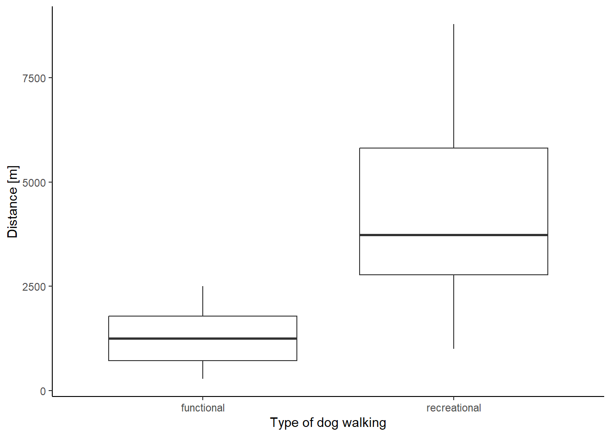
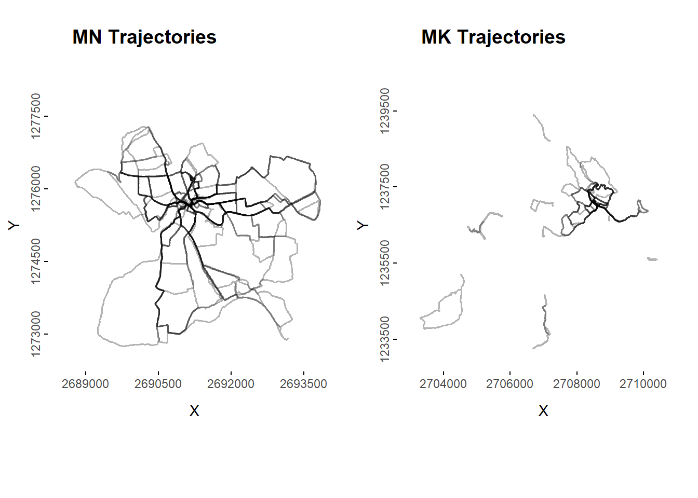
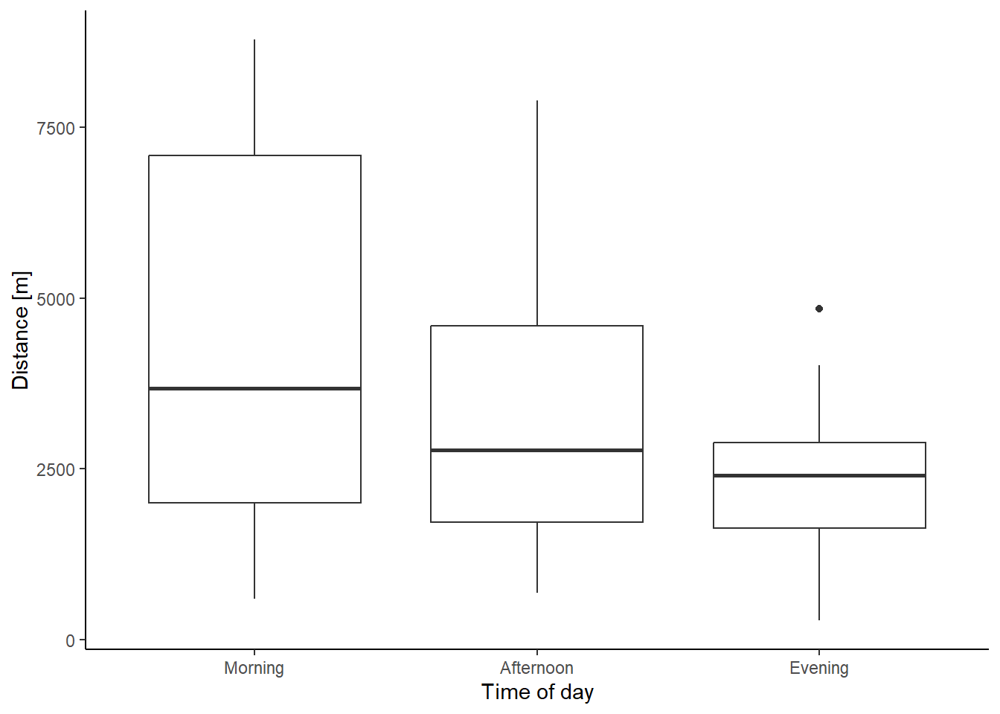

Code
library(sf)
library(tidyverse)
library(tmap)
library(cowplot)
library(lubridate)
library(dplyr)
library(plotly)
library(tmap)
library(SimilarityMeasures)
library(data.table)Final Project Patterns and Trends in Environmental Data - Computational Movement Analysis
library(sf)
library(tidyverse)
library(tmap)
library(cowplot)
library(lubridate)
library(dplyr)
library(plotly)
library(tmap)
library(SimilarityMeasures)
library(data.table)Walking is inherently a social activity, often performed with others, and there is a sense of pleasure gained from sharing the experience. Walking can occur both as an integrative practice and a dispersed practice (Harries and Rettie, 2016). Walking as an integrative practice occurs, where the purpose of the walking is actually to experience the walk. In contrast, dispersed walking is walking that occurs as part of a different integrative practice, such as shopping or traveling to work; walking is not the purpose of the practice but a means to achieve it (Westgard et al. 2021). Walking with a dog has been assumed to be leisure time or recreational. However, dog walking can also be an integrative practice when walking is just a way to achieve the purpose of satisfying the basic needs of the dog. Westgarth et al. 2021, classify dog walks into two broad categories: functional and recreational walks. Functional walks are primarily for the purpose of meeting the needs of the dog. In contrast, recreational walks catered to both the dog owner’s needs as well as those of the dog. They constitute an integrated practice where the purpose of the walk for the owner is to enjoy the walk, not just meet the needs of the dog to have a walk. As dog walking is a specific behavior different from general physical activity or even other types of walking, it requires a context-specific approach to examining these correlates. Specifically, dog walking is determined by the physical environment, social environment, and personal and dog-related factors (Westgard et al. 2014). Certain environments and contexts are deemed more conducive to functional than recreational dog walks (Westgard et al. 2021). Here, we aim to characterize the two types of dog walking behaviors. Our research questions are the following:
How do recreational- differ from functional dog walks? Are dog walks influenced by weather (precipitation)? How do the recreational dog walking patterns differ through the day? weekdays and weekends? How are the moving behavior patterns during dog walks?
We tracked our own daily movement behavior with the tracking app Posmo over the course of about two months (April & May 2023. We then filtered our dog walks, which contain 25´455 data points of 103 trajectories in total. The following attributes are part of the movement dataset of the two tracker users:
Attributes 5-7 were manually added to the two csv files.
Of the weather data we filtered the precipitation data of the two weather stations that are closest to the two towns of the two tracker users, which are Hinwil and Schaffhausen. We kept the three attributes that were relevant to us:
Because we were only working with our data from our dog walks, we had to look at all the walks in Posmo and exclude the walking modes and segments that were not part of our dog walks, and any walks with incomplete tracking. There were issues in our data that the app created duplicate time stamps with different sets of coordinates. These erroneous had to be cleaned out first. Several pre-processing steps had to be done before we could join our two movement data sets. First, we had to store the coordinates into two separate columns (X-coordinates and Y-coordinates). Next, the precipitation data was joined to the individual movement data sets and we added a new column for rain/no rain before we joined the two data frames. We categorized trajectories that had precipitation of more than 50% of the walk as rain and no rain for values below the set threshold. A new column was added for weekday vs. weekend, as well as for the time of day (morning/evening/afternoon).
Because we were only working with data from our dog walks, we had to look at all the walks in Posmo and exclude the walking modes and segments that were not part of our dog walks. There were issues in our data that the app created duplicate time stamps with different sets of coordinates. These ereneous data points had to be cleaned out first. Several pre-processing steps had to be done before we could join our two movement datasets. First, we had to store the coordinates into two seperate columns (X-coordinates and Y-coordinates). Next, the precipitation data was joined to the individual movement datasets that contains the precipitation data of the nearest weather station. A new column was added for rain/no rain and categorized trajectories that had precipitation of more than 50% of the walk as having rain and assigned no rain for values below the set threshold.The longest distance home was calculated for each trajectory. New columns were added for the weekday (weekend/weekday), time of the day (morning/afternoon/evening) and the start time of each trajectory.
Further parameters were calculated after static points were removed, such as step mean, time lag, step lenght, speed, duration and distance.
Because we were only working with data from our dog walks, we had to look at all the walks in Posmo and exclude the walking modes and segments that were not part of our dog walks. There were issues in our data that the app created duplicate time stamps with different sets of coordinates. These ereneous had to be cleaned out first. Several pre-processing steps had to be done before we could join our two movement datasets. First, we had to store the coordinates into two seperate columns (X-coordinates and Y-coordinates). Next, the precipitation data was joined to the individual movement datasets and we added a new column for rain/no rain before we joined the two data frames. We categorized trajectories that had precipitation of more than 50% of the walk as rain and no rain for values below the set threshold. A new column was added for weekday vs. weekend, as well as for the time of day (morning/evening/afternoon).
We adjusted the data types for further analysis and calculations. Further parameters were calculated after static points were removed, such as step mean, time lag, step lenght, speed, duration and distance.All these parameters were added to the data set. The average distance of functional walks is 1322.05 m, compared to an average distance of 4472.65 m for recreational walks.
We evaluated differences between functional and recreational dog walks in speed, distance and maximum distance from the house. T-test were used to test the hypothesis that the difference in means of the two groups was 0. We chose randomly four functional and four recreational trajectories for each of the two subjects to evaluate similarity. For that purpose we calculated Frechet distance among the trajectories within trajectory type and within subject. The effect of weather, specifically rain, on the dog walking behavior was assessed by comparing the length and speed of dog walks during rain and with no rain with a t-test or the equivalent Welch’s test when the variances weren’t homogeneous. The effect of the time of the day on the length of dog walks was evaluated with an ANOVA. Differences in duration and the length of the walk between weekdays and weekends were examined with a t-test.
Comparison of Functional and Recreational Dog-walks Functional dog walks took place at a speed of 1.20 m/s while the average for recreational dog walks was 1.21 m/s., and there weren’t significant differences between them (t = -0.38, df = 100, p-value = 0.70) (Fig. 1A). Functional walks covered shorter distances (Fig. 1B) and took place at closer distances from the house than recreational dog walks (Fig. 1C). According to the Frechet distances, functional walk trajectories were very dissimilar, and the same was observed for recreational trajectories (Fig. 2).
The Effect of Weather on the Dog-Walking Behavior Rainy weather did not affect the distance covered during dog walks (t = -0.13733, df = 8, p-value = 0.89). In rainy weather, the average length of dog walks was 3577.27 m whereas under no rain the average length was 3453.63 m. However, the weather conditions had an effect on the speed of the dog walking behavior. Under rainy conditions, the speed of dog walks was faster than when there was no rain (t = -4.3871, df = 27.165, p-value < 0.0001) (Fig. 3).
Temporal Differences in Dog Walking Behavior Distance covered during dog walks varied throughout the day (Df = 2, Sum Sq = 78656052, F value = 8.444, p < 0.001). Morning dog walks were on average longer than in the afternoon, and the evening walks were the shortest on average (Fig. 4). Neither the length (t = 0.63, df = 53.73, p-value = 0.53) nor the duration of the walks was (t = -0.19 secs, df = 48, p-value = 0.84) affected by the day of the week. During weekdays the length of dog walks were on average 3565.23 m, while on weekends the average was 3236.9 m.
Dog Walking Behavior Most of the trajectories while dog walking were loops and semi-loops and, the less common were axial trajectories (Fig. 5).
library(sf)
library(tidyverse)
library(tmap)
library(cowplot)
library(lubridate)
library(dplyr)
library(plotly)
library(tmap)
library(SimilarityMeasures)
library(data.table)#Import data
# Filter walk transport mode, select only necessary columns, and transform data frame into sf object and transform it into EPSG 2056 coordinate system
#Import Posmo data MK
posmo_MK <- read_delim("data/posmo_MK_edited3.csv", delim = ";") |>
filter(transport_mode == "Walk") |>
select(user_id, datetime, weekday, lon_x, lat_y, trajectoryID, Type, Shape) |>
st_as_sf(coords = c("lon_x","lat_y"), crs = 4326)|>
st_transform(2056)
# Import Posmo data MN
posmo_MN <- read_delim("data/posmo_MN_edited3.csv", delim = ";") |>
filter(transport_mode == "Walk") |>
select(user_id, datetime, weekday, lon_x, lat_y, trajectoryID, Type, Shape) |>
st_as_sf(coords = c("lon_x","lat_y"), crs = 4326)|>
st_transform(2056)
str(posmo_MK)
str(posmo_MN)
# import Weather Data with only the relevant columns
precip_data <- read_delim("data/weather_data.csv") |>
select(-tre200s0, -sre000z0)
precip_hinwil <- read_delim("data/weather_hinwil.csv")
# filter SHA weather station
precip_SHA <- precip_data |> filter(stn == "SHA") |> rename(datetime = time)
precip_SHA$datetime <- as.POSIXct(precip_SHA$datetime, tz = "UTC") # convert character into POSIXct
# HIW weather station
precip_HIW <- precip_hinwil |> filter(stn == "HIW")|> rename(datetime = time) |> rename(rco150z0 = rre150z0)
precip_HIW$datetime <- as.POSIXct(precip_HIW$datetime, tz = "UTC") # convert character into POSIXct
# Pre-processing
# store the coordinates into two separate columns
posmo_coordinates <- st_coordinates(posmo_MK)
posmo_MK <- cbind(posmo_MK, posmo_coordinates)
str(posmo_MK)
# the same with MN Data
posmoMN_coordinates <- st_coordinates(posmo_MN)
posmo_MN <- cbind(posmo_MN, posmoMN_coordinates)
#calculate longest distance from each trajectory to home for the two data sets
#Create an sf object with the house coordinates
house_MK <- read_delim("data/MK_house.csv") |>
st_as_sf(coords = c("lon_x","lat_y"), crs = 4326)|>
st_transform(2056)
houseMK_coordinates <- st_coordinates(house_MK)
house_MK <- cbind(house_MK, houseMK_coordinates)
#The same with MN
house_MN <- read_delim("data/MN_house.csv") |>
st_as_sf(coords = c("lon_x","lat_y"), crs = 4326)|>
st_transform(2056)
houseMN_coordinates <- st_coordinates(house_MN)
house_MN <- cbind(house_MN, houseMN_coordinates)
#Calculate the max distance from the house for each trajectory
posmo_MK$distance_home <- as.numeric(st_distance(posmo_MK, house_MK)[,1])
posmo_MK <- posmo_MK |>
group_by(trajectoryID) |>
mutate(max_distance = max(distance_home))
#the same for MN
posmo_MN$distance_home <- as.numeric(st_distance(posmo_MN, house_MN)[,1])
posmo_MN <- posmo_MN |>
group_by(trajectoryID) |>
mutate(max_distance = max(distance_home))
## Join posmo data with weather data then join the two dataframes
# Create new column with time values rounded to closest 10 minutes, to be able to join with weather data
posmo_MN <- posmo_MN |> mutate(
Datetime_round = lubridate::round_date(datetime,"10 minutes")
)
posmo_MK <- posmo_MK |> mutate(
Datetime_round = lubridate::round_date(datetime,"10 minutes")
)
# Join posmo data with weather data
posmo_weather_MN <- left_join(posmo_MN, precip_SHA, by = c("Datetime_round" = "datetime"))
posmo_weather_MK <- left_join(posmo_MK, precip_HIW, by = c("Datetime_round" = "datetime"))
# Delete double timestamps
posmo_weather_MN <- posmo_weather_MN |>
distinct(datetime, .keep_all = TRUE)
# Add new column for rain/no rain
posmo_weather_MN$precip[posmo_weather_MN$rco150z0 == 0] <- "no"
posmo_weather_MN$precip[posmo_weather_MN$rco150z0 > 0] <- "yes"
posmo_weather_MK$precip[posmo_weather_MK$rco150z0 == 0] <- "no"
posmo_weather_MK$precip[posmo_weather_MK$rco150z0 > 0] <- "yes"
#Join the two data frames vertically
posmo <- rbind(posmo_weather_MN, posmo_weather_MK)
# Get trajectories with precipitation >50% of the time
precip50 <- posmo |>
group_by(trajectoryID) |>
summarise(percent = length(which(precip == "yes")) / n()) |>
filter(percent >= 0.5) # trajectories 15, 16, 23, 45, T8, T9, T16, T20
# Create new column "precip_50 for trajectories with >= 50% of the time with rain
posmo <- posmo |>
group_by(trajectoryID, precip) |>
mutate(
precip_50 = case_when(
trajectoryID=="15" ~ "yes",
trajectoryID=="16" ~ "yes",
trajectoryID=="23" ~ "yes",
trajectoryID=="45" ~ "yes",
trajectoryID=="T8" ~ "yes",
trajectoryID=="T9" ~ "yes",
trajectoryID=="T16" ~ "yes",
trajectoryID=="T20" ~ "yes",
)
)
# assign all other values "no"
posmo$precip_50 <- posmo$precip_50 |> replace_na("no")
# Add a new column wday for Weekday/Weekend
posmo$wday <- ifelse(posmo$weekday %in% c("Sat", "Sun"), "weekend", "weekday")
#Add a new column start with the time at which the trajectory started and separate the time with format H and M
posmo <- posmo |>
group_by(trajectoryID) |>
mutate(start = min(datetime))
# Add a new column time_of_day for Morning/Afternoon/Evening
breaks <- lubridate::hour(hm("3:00", "10:00", "16:00", "21:59"))
labels <- c("Morning", "Afternoon", "Evening")
posmo$time_of_day <- cut(x=hour(posmo$start), breaks = breaks, labels = labels, include.lowest=TRUE)
posmo$start <- strftime(posmo$start, format="%H:%M:%S")
#Remove static points from trajectories. posmo-filter contains the trajectories without static points
str(posmo)
#To calculate distance among Time-stamp 1 and 2 back and forward.
posmo <- posmo |>
group_by(trajectoryID) |>
mutate(
n_plus1 = sqrt ((lead(X, 1) - X)^2 + (lead(Y, 1)-Y)^2),
n_plus2 = sqrt ((lead(X, 2) - X)^2 + (lead(Y, 2)-Y)^2),
nMinus1 = sqrt((lag(X, 1) - X)^2 + (lag(Y, 1) - Y)^2),
nMinus2 = sqrt((lag(X, 2) - X)^2 + (lag(Y, 2) - Y)^2)
)
posmo <- posmo |>
rowwise() |>
mutate(
stepMean = mean(c(nMinus2, nMinus1, n_plus1, n_plus2))
) |>
ungroup()
which(posmo$stepMean> 50 )
#Remove static points by applying threshold, the threshold is the average step Mean.
posmo <- posmo |>
mutate(static = stepMean < mean(stepMean, na.rm = TRUE))
posmo_filter <- posmo |>
filter(!static)Plot 1: Vizualization of a trajectory with and without static points
##Trajectories visualization with and without static points
## One of MK
K1 <- posmo %>%
filter(trajectoryID == "T1")
K1_filter <- posmo_filter %>%
filter(trajectoryID == "T1")
K1a <- ggplot(K1, aes(X, Y))+
geom_path()+
geom_point(color = "blue")+
coord_fixed()
K1b <- ggplot(K1_filter, aes(X, Y))+
geom_path()+
geom_point()+
coord_fixed()
plot_grid(K1a, K1b,
labels = c("Raw", "Static points removed"),
hjust = c(-2,-0.4),
vjust = 2.5,
ncol = 2, nrow = 1)
#Timelag.
#How often was the position recorded. Calculated for the trajectories with and without (posmo_filter) static points
posmo <- posmo |>
group_by(trajectoryID)|>
mutate(timelag = as.numeric(difftime(lead(datetime), datetime, units = "secs")))
posmo_filter <- posmo_filter |>
group_by(trajectoryID)|>
mutate(timelag = as.numeric(difftime(lead(datetime), datetime, units = "secs")))
which(posmo$timelag> 300)#The threshold was set at 300 (15*20), sometimes we had pauses of up to 20 minutes during the walks that recorded the same location several times
which(posmo$timelag> 500)
#Step-length, distance covered and speed calculation
#calculation for the whole trajectories
posmo <- posmo |>
group_by(trajectoryID) |>
mutate(steplenght = sqrt ((X-lead(X))^2 + (Y-lead(Y))^2))|>
mutate(duration = (max(datetime)- min(datetime))/60)|>
mutate(distance = sum(steplenght, na.rm = TRUE))
which(posmo$steplenght > 30) #30 meters in 15 seconds its an average
#to filter out outlayers (trackings with steplenght longer than 50 and timelags longer than 300)
posmo_speed <- posmo |>
filter(timelag < 300 | steplenght >50,)
posmo_speed <- posmo_speed|>
group_by(trajectoryID) |>
mutate(speed = mean(steplenght/timelag, na.rm = TRUE))
posmo_speed <- posmo_speed|>
filter(speed < 1.8)
#Comparing functional and recreational dog walks
#Speed calculation for the two type of walks excluding out-layers
speed_summary <- posmo_speed |>
group_by(Type, speed) |>
summarise() |>
st_drop_geometry()
# t-Test to evaluate differences in speed between the two types of walks
t.test(speed~Type, speed_summary, var.equal = TRUE)
#mean in group functional mean in group recreational
# 1.202219 1.214331
#calculation with the trajectories without static points
#posmo_filter <- posmo_filter |>
# group_by(trajectoryID) |>
# mutate(steplenght = sqrt ((X-lead(X))^2 + (Y-lead(Y))^2))|>
# mutate(duration = (max(datetime)- min(datetime))/60)|>
# mutate(distance = sum(steplenght, na.rm = TRUE))
# Distance calculations for recreational/functional walks
dist_summary <- posmo |>
group_by(Type, distance) |>
summarise() |>
st_drop_geometry()
mean(dist_summary$distance[1:33]) # average distance of functional walks 1272.11 m
mean(dist_summary$distance[34:103]) # average distance of recreational walks 4389.43 m
#Differences in max distance to the house
Maxdist_summary <- posmo |>
group_by(Type, max_distance) |>
summarise() |>
st_drop_geometry()
mean(dist_summary$distance[1:33]) # average distance of functional walks 1272.11 m
mean(dist_summary$distance[34:103]) # average distance of recreational walks 4389.43 m
#The effect of the weather on the dog-walking behavior
# calculate average speed for dog walks with and without precipitation
speed_precip_summary <- posmo_speed |>
group_by(Type, precip_50, speed) |>
summarise() |>
st_drop_geometry()
t.test(speed~precip_50, speed_precip_summary)
#Evaluating differences in distance covered during dog walks with and without precipitation
precip_dist_summary <- posmo |>
group_by(precip_50, distance) |>
summarise() |>
st_drop_geometry()
t.test(distance ~ precip_50, precip_dist_summary)
#Temporal differences in dog walking behavior
# calculate average distance for recreational/functional walks for time of day 3 categories (morning/afternoon/evening)
dist_type_tofday_summary <- posmo |>
group_by(Type, time_of_day, distance) |>
summarise() |>
st_drop_geometry()
mean(dist_type_tofday_summary$distance[1:9]) # average distance of functional morning walks 1330.23 m
mean(dist_type_tofday_summary$distance[10:21]) # average distance of functional afternoon walks 1304.13 m
mean(dist_type_tofday_summary$distance[22:33]) # average distance of functional evening walks 1196.49 m
mean(dist_type_tofday_summary$distance[34:67]) # average distance of recreational morning walks 5154.33 m
mean(dist_type_tofday_summary$distance[68:90]) # average distance of recreational afternoon walks 3973.71 m
mean(dist_type_tofday_summary$distance[91:103]) # average distance of recreational evening walks 3124.44 m
# calculate average distance for morning/afternoon/evening walks
dist_timeofday_summary <- posmo |>
group_by(time_of_day, distance) |>
summarise() |>
st_drop_geometry()
mean(dist_timeofday_summary$distance[1:43]) # average distance of morning walks 4353.93 m
mean(dist_timeofday_summary$distance[44:78]) # average distance of afternoon walks 3058.42 m
mean(dist_timeofday_summary$distance[79:103]) # average distance of evening walks 2199.02 m
aov1 <- aov(distance~time_of_day, dist_timeofday_summary)
summary.aov(aov1)
# calculate average distance for weekday/weekend walks
dist_wday_summary <- posmo |>
group_by(wday, distance) |>
summarise() |>
st_drop_geometry()
mean(dist_wday_summary$distance[1:71]) # average distance of weekday walks 3565.237 m
mean(dist_wday_summary$distance[72:103]) # average distance of weekend walks 3236.906 m
t.test(distance~wday, dist_wday_summary)
# calculate average speed for weekday/weekend walks
speed_wday_summary <- posmo_speed |>
group_by(wday, speed) |>
summarise() |>
st_drop_geometry()
mean(speed_wday_summary$speed[1:70]) # average speed of weekday walks 1.22 m/s
mean(speed_wday_summary$speed[71:102]) # average speed of weekend walks 1.18 m/s
#Differences in the start time of the morning walk on weekdays vs weekends
starttime_wday_summary <- posmo |>
filter(time_of_day == "Morning")|>
group_by(wday, start) |>
summarise() |>
st_drop_geometry()
#Differences in duration of the walk on weekdays vs weekends
duration_wday_summary <- posmo |>
group_by (wday, duration) |>
summarise() |>
st_drop_geometry()
t.test(duration ~ wday, duration_wday_summary)Comparison of Functional and Recreational Dog-walks Functional dog walks took place at a speed of 1.20 m/s while the average for recreational dog walks was 1.21 m/s., and there weren’t significant differences between them (t = -0.38, df = 100, p-value = 0.70) (Fig. 1A).
ggplot(speed_summary, mapping = aes(Type, speed))+
geom_boxplot() +
labs(x = "Type of dog walking", y = "Speed [m/s]")+
theme_light() #use this one for the report. Fig 1A
Functional walks covered shorter distances (Fig. 1B) and took place at closer distances from the house than recreational dog walks (Fig. 1C).
ggplot(dist_summary, mapping = aes(Type, distance))+
geom_boxplot() +
labs(x = "Type of dog walking", y = "Distance [m]")+
theme_light()#Figure 1B
ggplot(Maxdist_summary, mapping = aes(Type, max_distance))+
geom_boxplot() +
labs(x = "Type of dog walking", y = "Max distance home [m]")+
theme_light()+
scale_y_continuous(limits = c(0, 1000))#Fig 1C
According to the Frechet distances, functional walk trajectories were very dissimilar, and the same was observed for recreational trajectories (Fig. 2).
# Frechet Distance
#Visualization of parameters
#randomly select trajectories to compare for MN
x <- sample(1:56, 1)
x
# Functional: 4, 36, 55 Recreational: 6, 39, 49
#randomly select trajectories to compare for MK
x1 <- sample(1:48, 1)
x1
#Functional: T11, T35, T43 Recreational: T40, T20, T27
#Create the matrices for the trajectories to compare
#Four recreational walks for MN
Traj6MN <- posmo |>
ungroup() |>
st_drop_geometry() |>
filter(trajectoryID == 6)|>
mutate(Datetime_int = as.integer(datetime))|>
select(X, Y, Datetime_int)
Traj6MN <- as.matrix(Traj6MN)
Traj39MN <- posmo |>
ungroup() |>
st_drop_geometry() |>
filter(trajectoryID == 39)|>
mutate(Datetime_int = as.integer(datetime))|>
select(X, Y, Datetime_int)
Traj39MN <- as.matrix(Traj39MN)
Traj49MN <- posmo |>
ungroup() |>
st_drop_geometry() |>
filter(trajectoryID == 49)|>
mutate(Datetime_int = as.integer(datetime))|>
select(X, Y, Datetime_int)
Traj49MN <- as.matrix(Traj49MN)
#Four functional walks for MN
Traj4MN <- posmo |>
ungroup() |>
st_drop_geometry() |>
filter(trajectoryID == 4)|>
mutate(Datetime_int = as.integer(datetime))|>
select(X, Y, Datetime_int)
Traj4MN <- as.matrix(Traj4MN)
Traj36MN <- posmo |>
ungroup() |>
st_drop_geometry() |>
filter(trajectoryID == 36)|>
mutate(Datetime_int = as.integer(datetime))|>
select(X, Y, Datetime_int)
Traj36MN <- as.matrix(Traj36MN)
Traj55MN <- posmo |>
ungroup() |>
st_drop_geometry() |>
filter(trajectoryID == 55)|>
mutate(Datetime_int = as.integer(datetime))|>
select(X, Y, Datetime_int)
Traj55MN <- as.matrix(Traj55MN)
#Four recreational walks for MK
Traj20MK <- posmo |>
ungroup() |>
st_drop_geometry() |>
filter(trajectoryID == "T20")|>
mutate(Datetime_int = as.integer(datetime))|>
select(X, Y, Datetime_int)
Traj20MK <- as.matrix(Traj20MK)
Traj40MK <- posmo |>
ungroup() |>
st_drop_geometry() |>
filter(trajectoryID == "T40")|>
mutate(Datetime_int = as.integer(datetime))|>
select(X, Y, Datetime_int)
Traj40MK <- as.matrix(Traj40MK)
Traj27MK <- posmo |>
ungroup() |>
st_drop_geometry() |>
filter(trajectoryID == "T27")|>
mutate(Datetime_int = as.integer(datetime))|>
select(X, Y, Datetime_int)
Traj27MK <- as.matrix(Traj27MK)
#Four functional walks for MK
Traj11MK <- posmo |>
ungroup() |>
st_drop_geometry() |>
filter(trajectoryID == "T11")|>
mutate(Datetime_int = as.integer(datetime))|>
select(X, Y, Datetime_int)
Traj11MK <- as.matrix(Traj11MK)
Traj35MK <- posmo |>
ungroup() |>
st_drop_geometry() |>
filter(trajectoryID == "T35")|>
mutate(Datetime_int = as.integer(datetime))|>
select(X, Y, Datetime_int)
Traj35MK <- as.matrix(Traj35MK)
Traj43MK <- posmo |>
ungroup() |>
st_drop_geometry() |>
filter(trajectoryID == "T43")|>
mutate(Datetime_int = as.integer(datetime))|>
select(X, Y, Datetime_int)
Traj43MK <- as.matrix(Traj43MK)#Similarity measures: Calculate Frechet distance for 4 randomly selected functional and 4 recreational walks within the same walker.
run_full <- FALSE
if(run_full){
# MN Functional: 4, 36, 55
A<- Frechet(Traj4MN, Traj36MN, testLeash=-1)# 1291697
B <- Frechet(Traj4MN, Traj55MN)# 1898412
D <- Frechet(Traj36MN, Traj55MN)# 606863
SM1 <- data.frame (
Frechet = c(A, B, D),
Trajpair = c("T4-T36", "T4-55", "T36-T55"),
Walker = c ("MN", "MN", "MN"),
Type = c("Functional", "Functional", "Functional")
)
# Recreational: 6, 39, 49
G <- Frechet(Traj6MN, Traj39MN) #1355605
H <- Frechet(Traj6MN, Traj49MN) #1641793
J <- Frechet(Traj39MN, Traj49MN) #286763
SM2 <- data.frame (
Frechet = c(G, H, J),
Trajpair = c("T6-T39", "T6-49", "T39-T49"),
Walker = c ("MN", "MN", "MN"),
Type = c("Recreational", "Recreational", "Recreational")
)
# MK Functional: T11, T35, T43
M <- Frechet(Traj11MK, Traj35MK) #106106.4
N <- Frechet(Traj11MK, Traj43MK) #1997576
P <- Frechet(Traj35MK, Traj43MK) #530645
SM3 <- data.frame (
Frechet = c(M, N, P),
Trajpair = c("T11-T35", "T11-43", "T35-T43"),
Walker = c ("MK", "MK", "MK"),
Type = c("Functional", "Functional", "Functional")
)
# Recreational: T40, T20, T27
S <- Frechet(Traj40MK, Traj20MK) #1106042
Z <- Frechet(Traj40MK, Traj27MK) #786486
V <- Frechet(Traj20MK, Traj27MK) #319621.3
SM4 <- data.frame(
Frechet = c(S, Z, V),
Trajpair = c("T40-T20", "T40-27", "T20-T27"),
Walker = c ("MK", "MK", "MK"),
Type = c("Recreational", "Recreational", "Recreational")
)
Frechet <- rbind(SM1, SM2, SM3, SM4)
write_csv(Frechet, "data-temp/Frechet.csv")
} else{
Frechet <- read_csv("data-temp/Frechet.csv")
}
ggplot(Frechet, mapping = aes(Type, Frechet))+
geom_boxplot() +
labs(x = "Type of dog walking", y = "Frechet Distance")+
theme_light() 
ggplot(Frechet, aes(Trajpair, Frechet))+
geom_col(aes(fill = Walker))+
facet_wrap(~ Type, nrow = 2, scales = "free")+
theme_light()+
labs(x = "Trajectory pairs", y = "Frechet Distance")+
theme(axis.text.x = element_text(angle = 90))#Fig. 2The Effect of Weather on the Dog-Walking Behavior Rainy weather did not affect the distance covered during dog walks (t = -0.13733, df = 8, p-value = 0.89). In rainy weather, the average length of dog walks was 3577.27 m whereas under no rain the average length was 3453.63 m. However, the weather conditions had an effect on the speed of the dog walking behavior. Under rainy conditions, the speed of dog walks was faster than when there was no rain (t = -4.3871, df = 27.165, p-value < 0.0001) (Fig. 3).
ggplot(speed_precip_summary, mapping = aes(precip_50, speed))+
geom_boxplot() +
labs(x = "Precipitation", y = "Speed [m/s]")+
theme_light() #Fig. 3
Temporal Differences in Dog Walking Behavior Distance covered during dog walks varied throughout the day (Df = 2, Sum Sq = 78656052, F value = 8.444, p < 0.001). Morning dog walks were on average longer than in the afternoon, and the evening walks were the shortest on average (Fig. 4). Neither the length (t = 0.63, df = 53.73, p-value = 0.53) nor the duration of the walks was (t = -0.19 secs, df = 48, p-value = 0.84) affected by the day of the week. During weekdays the length of dog walks were on average 3565.23 m, while on weekends the average was 3236.9 m.
ggplot(dist_type_tofday_summary, mapping = aes(time_of_day, distance))+
geom_boxplot() +
labs(x = "Time of day", y = "Distance [m]")+
theme_light()#Fig. 4Dog Walking Behavior Most of the trajectories while dog walking were loops and semi-loops and, the less common were axial trajectories (Fig. 5).
# Summarise the trajectory shapes
shape_summary <- posmo |>
group_by(trajectoryID, Shape) |>
summarise() |>
ungroup() |>
group_by(Shape) |>
summarise(count = n()) |>
st_drop_geometry() |>
mutate(percent = round(count / sum(count) * 100, 2))
# Pie chart of trajectory shapes
plot_ly(shape_summary, labels = ~Shape, values = ~percent, type = 'pie') %>%
layout(title = "Trajectory Shapes",
xaxis = list(showgrid = FALSE, zeroline = FALSE, showticklabels = FALSE),
yaxis = list(showgrid = FALSE))#Fig. 5# Visualization of trajectories for both users
# Visualization of all trajectories of MN
plotMN <- posmo_MN |>
ggplot(aes(X, Y, group = trajectoryID)) +
geom_path(col = "black", alpha = 0.3, size = 0.6) +
coord_equal(ratio = 1) +
theme(legend.position = "none") +
theme_minimal()+
theme(panel.grid = element_blank(),
axis.ticks = element_line(),
axis.text.y = element_text(angle = 90, hjust = 0.5),
axis.title.x = element_text(margin = margin(t = 10,r = 0,b=0,l=0)),
axis.title.y = element_text(margin = margin(t = 10,r = 5,b=0,l=0))) +
labs(x = "X", y = "Y")+
scale_x_continuous(limits = c(2688500, 2694000), breaks = c(2689000, 2690500, 2692000, 2693500))+
scale_y_continuous(limits = c(1272500, 1278000), breaks = c(1273000, 1274500, 1276000, 1277500))
# MK home trajectories (excluding two trajectories in Kanton of Graubünden)
posmoMK_home <- filter(posmo_MK, !trajectoryID %in% c("T2", "T3"))
# Visualization of all home trajectories of MK
plotMK <- posmoMK_home |>
ggplot(aes(X, Y, group = trajectoryID)) +
geom_path(col = "black", alpha = 0.3, size = 0.6) +
coord_equal(ratio = 1) +
theme(legend.position = "none") +
theme_minimal()+
theme(panel.grid = element_blank(),
axis.ticks = element_line(),
axis.text.y = element_text(angle = 90, hjust = 0.5),
axis.title.x = element_text(margin = margin(t = 10,r = 0,b=0,l=0)),
axis.title.y = element_text(margin = margin(t = 10,r = 5,b=0,l=0))) +
labs(x = "X", y = "Y")+
scale_x_continuous(limits = c(2703000, 2711000), breaks = c(2704000, 2706000, 2708000, 2710000))+
scale_y_continuous(limits = c(1233000, 1240000), breaks = c(1233500, 1235500, 1237500, 1239500))
plot_grid(plotMN, plotMK, align = "hv",
labels = c("MN Trajectories", "MK Trajectories"),
ncol = 2, nrow = 1, vjust = 3)# Plots that are not going to be included in the report (could get deleted)
#Visualization of parameters
ggplot(precip_dist_summary, mapping = aes(precip_50, distance))+
geom_boxplot() +
labs(x = "Precipitation", y = "Distance [m]")+
theme_light() 
ggplot(speed_precip_summary, mapping = aes(precip_50, speed))+
geom_boxplot() +
labs(x = "Precipitation", y = "Speed [m/s]")+
theme_light()ggplot(duration_wday_summary, mapping = aes(wday, duration))+
geom_boxplot() +
labs(x = "Day", y = "Duration [mins]")+
theme_light()#ggplot(starttime_wday_summary, mapping = aes(wday, start))+
# geom_point() +
# labs(x = "Day", y = "Time at the start of morning walk")+
# theme_light()